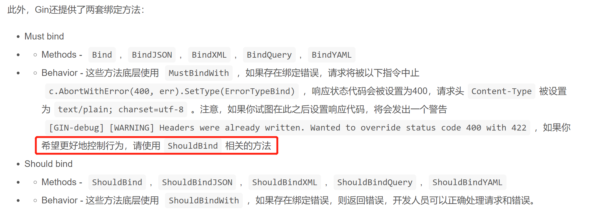
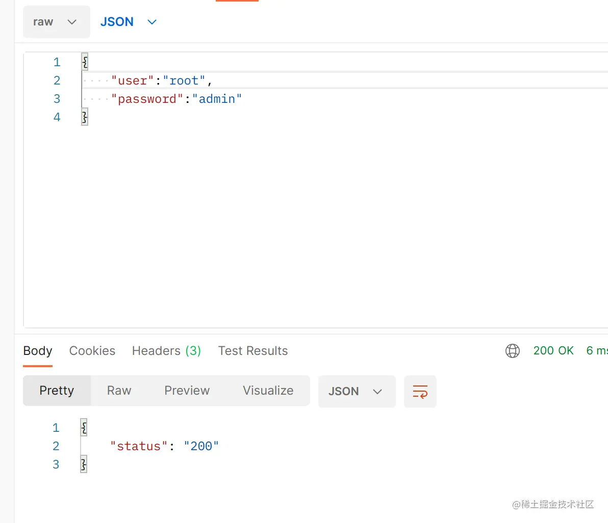

Gin 参数/模型绑定¶
场景：
Gin 在使用的时候，总是需要定义一个结构体，然后一个个初始化，一个个传参给请求方法，如Query，这时候为了更加方便地获取请求相关参数，提高开发效率，可以使用基于请求的Content-Type识别请求数据类型并利用反射机制自动提取请求中QueryString、form表单、JSON、XML等参数结构体中。
package main
import (
"fmt"
"github.com/gin-gonic/gin"
"net/http"
)
type UserInfo struct {
Username string
password string
}
func main() {
r := gin.Default()
r.GET("/login", func(c *gin.Context) {
username := c.Query("name")
password := c.Query("age")
u := UserInfo{
username,
password,
}
fmt.Println("%#v",u)
c.JSON(http.StatusOK,gin.H{
"message":"ok",
})
})
r.Run()
}
将请求主体绑定到结构体中，使用模型绑定。
package main
import (
"fmt"
"github.com/gin-gonic/gin"
"net/http"
)
type UserInfo struct {
Username string `form:"username"` //注：字段首字母大写
Password string `form:"password"`
}
func main() {
r := gin.Default()
//用两个斜线分割的URI，路径参数
r.GET("/user/:name/:age", func(c *gin.Context) {
var u UserInfo //结构体实例化 u
err := c.ShouldBind(&u) //注意：要是想修改结构体里面的值，需要传一个地址过去
if err != nil{
c.JSON(http.StatusBadRequest,gin.H{
"error":err.Error(),
})
}else {
fmt.Println("%#v",u)
c.JSON(http.StatusOK,gin.H{
"status":"ok",
})
}
})
r.Run()
}
用 form："username"来指定 tag ，能与用户返回的用户名username和密码passage对应起来。
如果 post 是 JSON 格式的数据就采用，ShouldBindJSON方法。
package main
import (
"github.com/gin-gonic/gin"
"net/http"
)
// 定义接收数据的结构体
type Login struct {
// binding:"required"修饰的字段，若接收为空值，则报错，是必须字段
User string `form:"username" json:"user" uri:"user" xml:"user" binding:"required"`
Pssword string `form:"password" json:"password" uri:"password" xml:"password" binding:"required"`
}
func main() {
// 1.创建路由
// 默认使用了2个中间件Logger(), Recovery()
r := gin.Default()
// JSON绑定
r.POST("loginJSON", func(c *gin.Context) {
// 声明接收的变量
var json Login
// 将request的body中的数据，自动按照json格式解析到结构体
if err := c.
(&json); err != nil {
// 返回错误信息
// gin.H封装了生成json数据的工具
c.JSON(http.StatusBadRequest, gin.H{"error": err.Error()})
return
}
// 判断用户名密码是否正确
if json.User != "root" || json.Pssword != "admin" {
c.JSON(http.StatusBadRequest, gin.H{"status": "304"})
return
}
c.JSON(http.StatusOK, gin.H{"status": "200"})
})
r.Run()
}
运行结果如下：

更新: 2022-05-03 23:30:50
原文: https://www.yuque.com/xiaoshan_wgo/codingnotes/rd3fgz